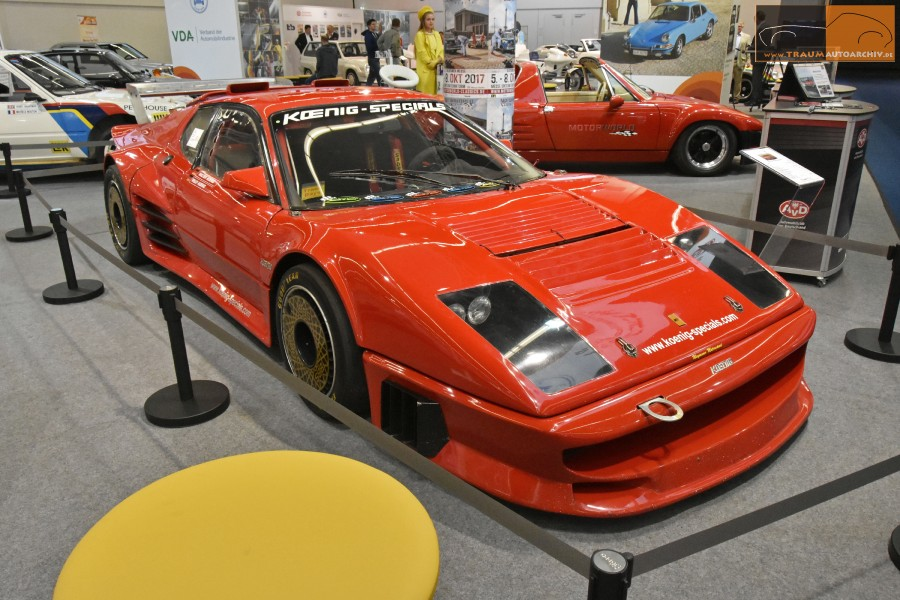
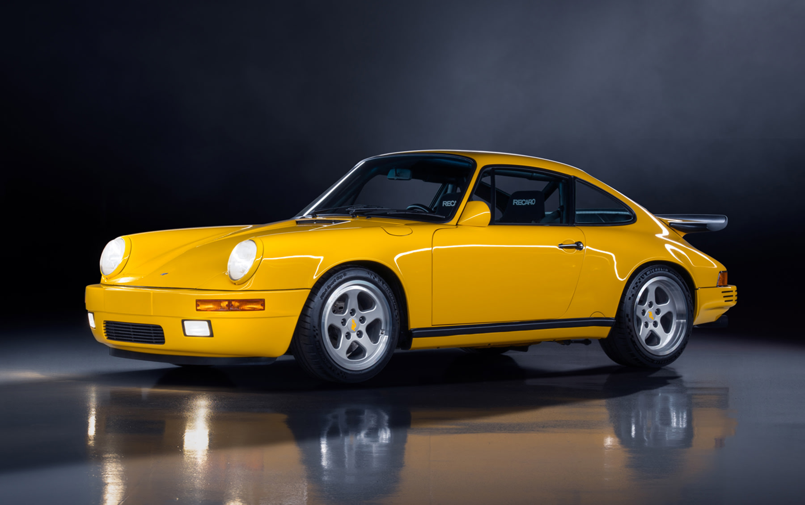

The Koenig Discount
30 Ottobre 2025
A real phenomenon in the automotive world is that Koenig Ferraris generally sell for discounts to the stock models. Ferrari acolytes are famously purist, and they consider any addition or subtraction to a car after leaving the factory in Maranello to be a permanent stain on a car’s history. In the 1980’s, there was no greater stain to the Prancing Horse than Willy König’s wild creations. In 1974, König, a publishing magnate turned gentleman racer, bought a Ferrari 365 GT4 BB. BB stood for Berlinetta Boxer, an infamous misnomer; while the car was a berlinetta, it had a flat V12 instead of a true boxer engine like in the 911. BB instead was thought to be an acronym for Brigitte Bardot, comparing Ferrari’s first mid-engined V12 with the beautiful Hollywood star. Perhaps that association is what made König’s actions all the more reprehensible. König was dissatisfied with the performance of the Boxer on the racetrack. So, he modified it to perform to his needs. Much to the chagrin of the Ferrari acolytes, his modifications didn’t stop under the hood. A hallmark of König’s work became large rear spoilers, the kind that Ferrari avoided almost entirely for taste’s sake, save for the F40 and the most recent SF90XX. Thus, König became anathema to Maranello.
Meanwhile, other racers admired König’s work and commissioned him to do the same for their cars. Thus, Koenig Specials was born (he chose instead of König for the company name because there was a large German Ferrari dealer named König). Koenig offered a variety of performance modifications to 365 GT4s and the later 512s, including exhausts, pistons, cylinder heads, carburetors, and, most obsessed over in magazines, a pair of Rajay turbochargers that brought power to up to 620 horsepower. Many owners, however, opted instead of the twin turbo conversion to just fit a fiberglass body kit. Almost every body panel could be replaced with an outrageous Koenig design, including streaks on the rear side skirts and twin snorkels on the roof feeding the engine. Those show-offs helped to earn Koenig a thoroughly toxic reputation in the automotive world. For example, see below a particularly heinous example, the "Guidomobile", courtesy of Ferrarichat.
Just 20 to 30 Boxers were modified by Koenig, according to Willy’s son Walter. Fast forward to today’s market reality. Just a week ago, on the October 23rd 2025, a 1983 Ferrari 512 BBi modified by Koenig with a bodykit and some mechanical modifications short of the twin-turbo kit was sold by Bonhams for £90,000 (a bit less than $120k). This particular car has been sitting for 10 years, so it requires a mechanical overhaul. Still, what a bargain!
A good but not incredible Boxer is now a $250k car. This Koenig whose engine turns freely couldn’t even get half that. Don’t get hung up on the work needed for this particular example: Koenig modified Boxers in fighting shape regularly sell for discounts. For example: one was bid up to just $158k on BringaTrailer a year ago, at Pebble Beach in 2021 one from Donald L. Weber’s collection brought just $224k against a $250-300k estimate, and DDClassic’s white on red 1980s icon sold for $174k in 2022.

To illustrate how ridiculous that discount is, I’ll use an analogy. A year after König started modifying his Boxer, another German modifier, Alois Ruf, modified a 911 to create a Ruf Turbo. A couple years after Koenig created the twin-turbo Testarossa Competition Evolution II, Ruf came out with the twin-turbo Ruf CTR or “Yellowbird”. Those Ruf modified cars sell for serious premiums over the stock cars. And while Ferraris are usually more valuable than Porsches, the Yellowbird is an order of magnitude more valuable than the Competition Evolution II.
This is all for the better. It means while cookie cutter 911s sell for crazy prices, so you can go around looking like the neighborhood dentist, the real tuner icon of the 1970s and 1980s is still attainable. You can get 5 or 6 figure discounts off a Ferrari Boxer, Ferrari’s first mid-engined V12 to compete with Lamborghini’s Miura and the last truly handbuilt Ferrari, just because it has an intoxicating and iconic 1980s bodykit and unfortunately produces more power. Let’s hope this phenomenon lasts!